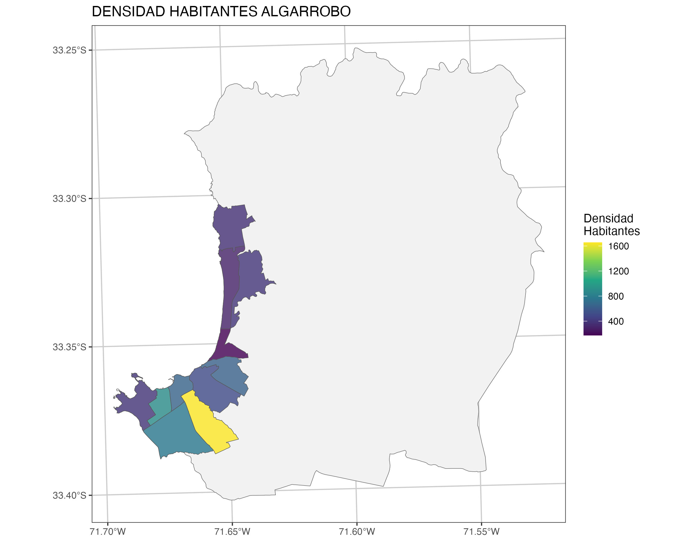
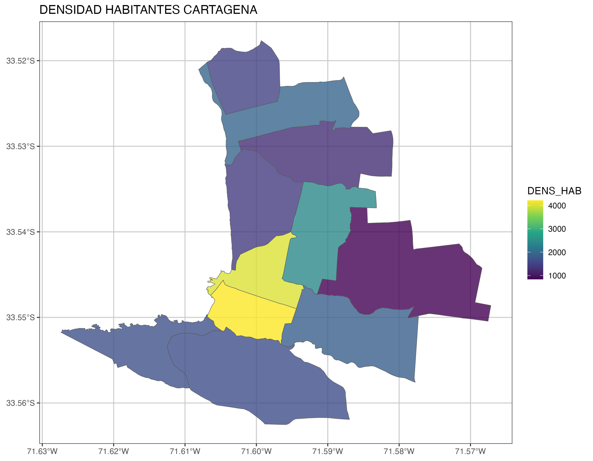
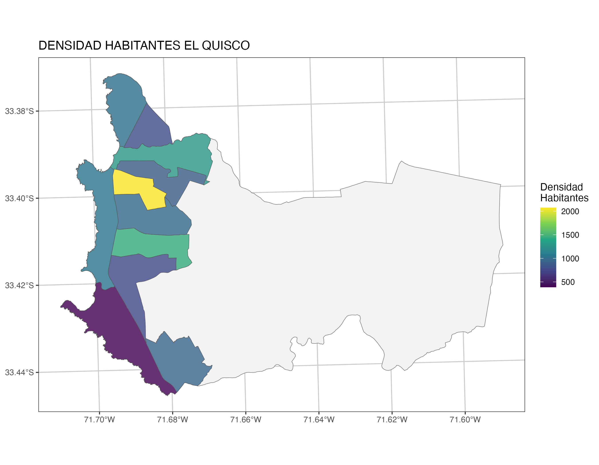
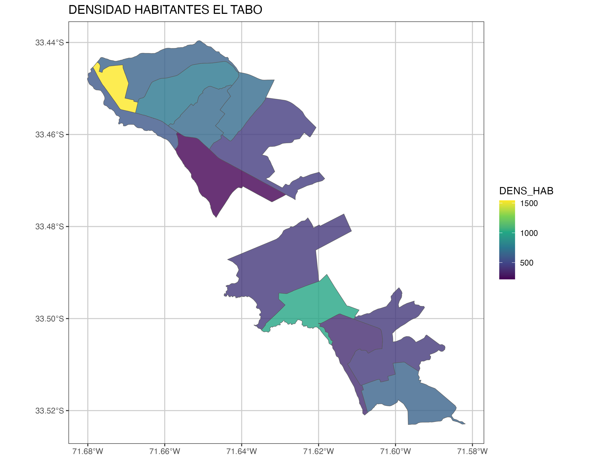
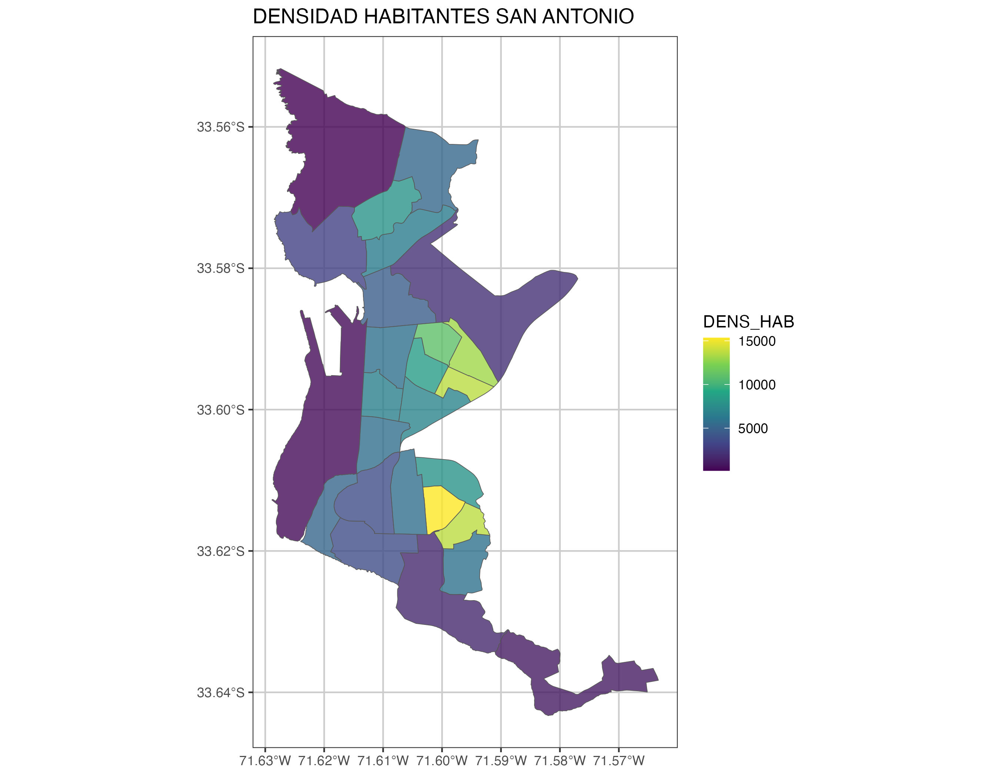

library(sf)
library(dplyr)
library(ggplot2)
library(viridis)Appendix E — Gráficos Interativos
E.1 Descripción
En este apéndice la idea es generar un mapa por cada una de las comuna de una provicia de forma iterativa, utilizando ciclos for que vimos en Section 5.2.1. Esto se puede aplicar para cualquier tipo de mapas y puede ser utilizado para preprocesar análisis, gráficos, modelos, etc. que tomen demasiado tiempo, entonces el hacerlo antes permite que la etapa de renderizado del markdown sea más eficiente.
E.2 Lectura de Insumos
Librerías
Base de Datos
La base que se utulizará corresponderá las zonas censales urbanas de Chile, para luego filtrar una provincia a elección para el elemplo será provincia de San Antonio que cuenta con 6 comunas.
comunas <- readRDS("data/censo/Comunas_Chile.rds")
zonas <- readRDS("data/censo/zonas_urb_consolidadas.rds")
# unique(zonas$NOM_PROVIN)
provincia <- "SAN ANTONIO"
comunas_prov <- comunas %>% filter(NOM_PROVIN == provincia)
base_provincial <- zonas %>% filter(NOM_PROVIN == provincia)
comunas <- unique(base_provincial$NOM_COMUNA)
comunas[1] "ALGARROBO" "EL QUISCO" "CARTAGENA" "EL TABO"
[5] "SAN ANTONIO" "SANTO DOMINGO"E.3 Interación
En esta etapa se creará un script donde se genere un flujo que permita iterar por cada zona urbana de las comunas de la provincia de San Antonio. Primero se define una ruta de salida de los mapas donde se iràn almacenando. Posteriormente se crea una estructura de iteración mediante ciclo for (Section 5.2.1), donde al iterar por cada comna primero filtra la base de datos, luego genera el gráfico y finalmente guarda el mapa con nombre independiente.
ruta_salida <- "data/graficos/"
for(comuna in comunas){
print(paste0("Operando la comuna: ", comuna))
comunas_contorno <- comunas_prov %>%
filter(NOM_COMUNA == comuna)
#Fitrar base
base_comunal <- base_provincial %>%
filter(NOM_COMUNA == comuna)
# generar gráfico
grafico_com <- ggplot() +
geom_sf(data = comunas_contorno, fill ="gray95",
color = "gray40")+
geom_sf(data = base_comunal, aes(fill = DENS_HAB), alpha= 0.8)+
scale_fill_viridis_c(name = "Densidad \nHabitantes")+
ggtitle(paste0("DENSIDAD HABITANTES ", comuna)) +
theme_bw() +
theme(panel.grid.major = element_line(colour = "gray80"),
panel.grid.minor = element_line(colour = "gray80"))
#guardar imagenes
nombre_plot <- "Densidad_habitantes"
nombre_imagen <- paste0(ruta_salida, gsub(" ", "_", comuna) ,".jpg")
ggplot2::ggsave(filename = nombre_imagen, plot = grafico_com,
height = 7, width = 9)
}E.4 Visualización de resultados




